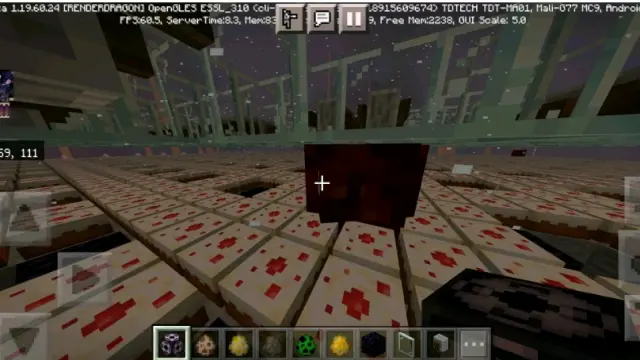
如图所示，在测试版1.19.60.24的更新中，更改了史莱姆和岩浆怪的空间检测范围
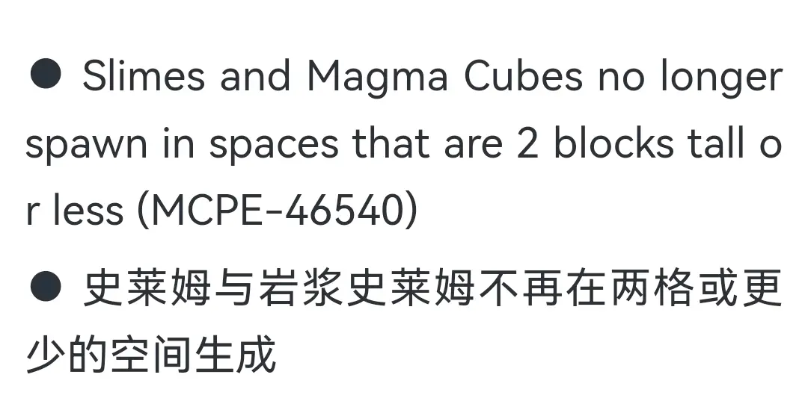
于是我们也第一時间去进行了测试，众所周知，之前基岩版当中有不少的生物，其实际碰撞箱跟空间检测范围是有不小差别的，那些像是羊驼苦力怕烈焰人马之类的，本身就还算高的，检测范围使用同样的高度，倒也没什么
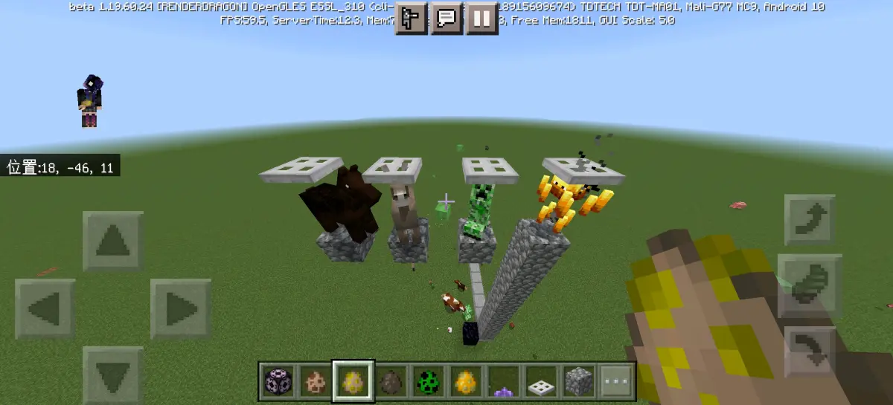
但是那些本身还没有1.5高的，用的居然也是同样的检测高度，这个就很不合理了，不过好像也并没有什么太大影响就对了，所以就是顺便提一嘴
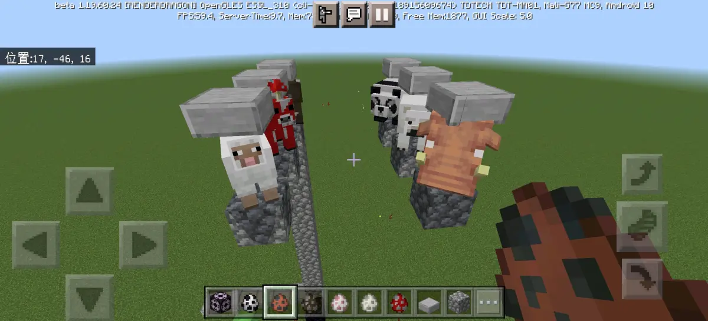
这些的话，在这次更新当中，并没有做任何修改，依然是使用比自身实际体积更高的空间检测范围，所以我们就不做赘述了，就来讲一下史莱姆和岩浆怪
https://b23.tv/U677OP7这个是之前1.19.60-的检测范围，也就是用的跟苦力怕一模一样的空间检测范围，0.6宽1.8高（虽然苦力怕本身只有1.7高）
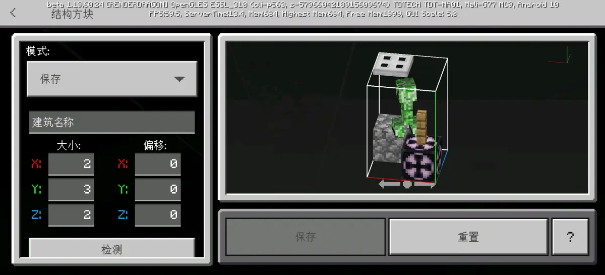
然后现在经过修改之后，我们首先是去测试了高度，我们经过了一系列的测试之后发现，同样是三个形态，共用一套检测机制，但是检测的大小变成了大型岩浆怪或者史莱姆的大小，也就是2.08×2.08×2.08
因为实在是找不到差值这么小（0.04格＝0.32像素）的限制类方块，我们就用我们能找到的差值最小的限制类方块去测试了一下
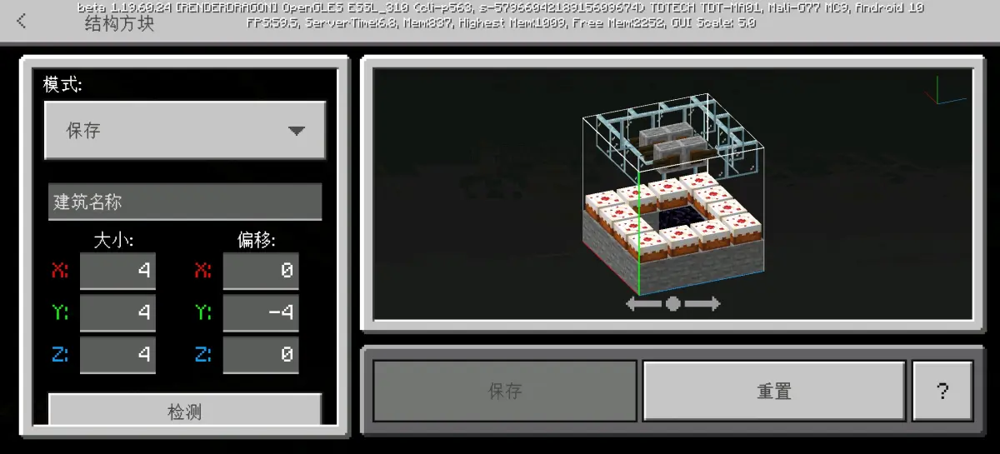
结果是依然可以正常生成
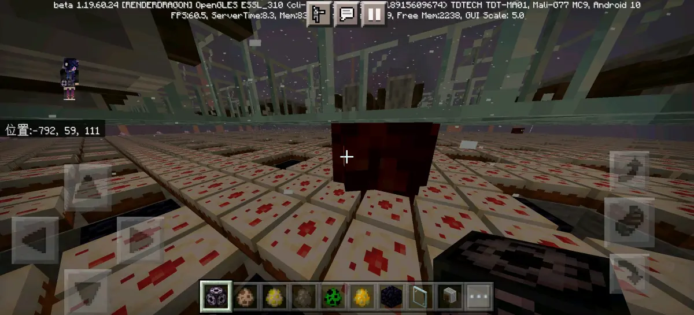
这个時候你可能觉得万一它的检测范围就只有2×2，怎么办，实际上看这个
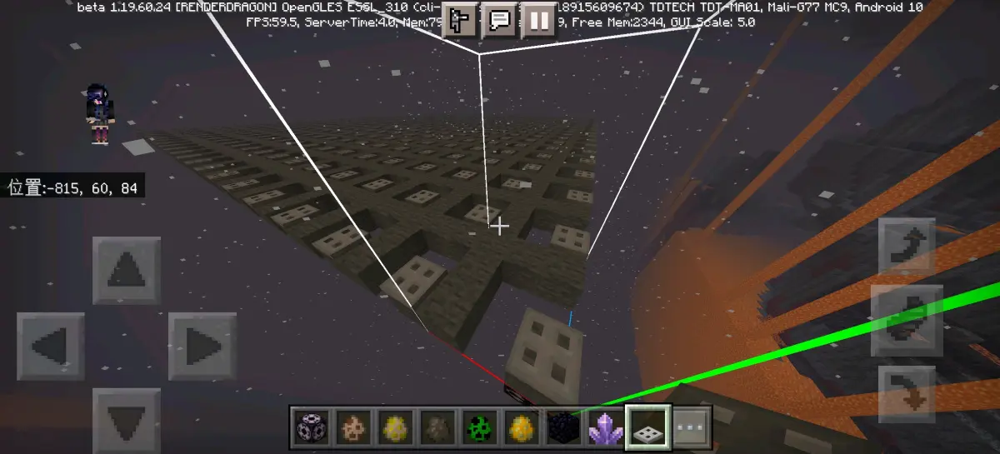
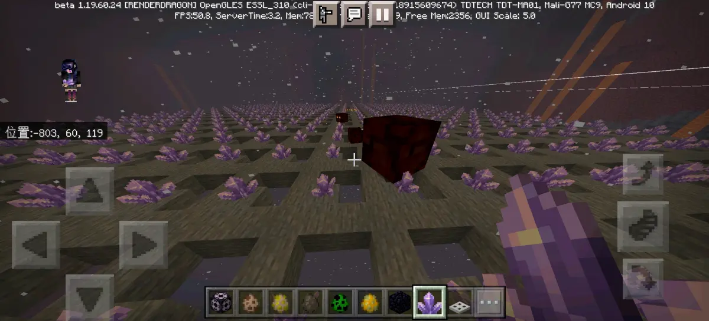
通过这两种限制类方块的对比，可以看出来，它的空间检测范围绝对是4×4没错，不过只比2×2稍微大了一点点，也就是0.08个方块，但它的检测范围确实是有4×4，也就是说，如果你在这个范围之内违反了空间检测机制，比如说像下面这样同時存在了限制类方块和挤压类方块
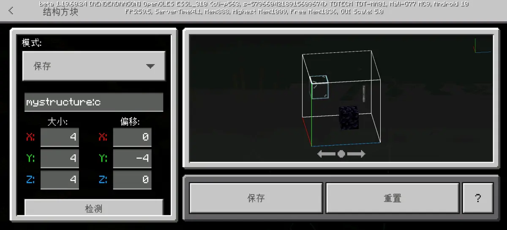
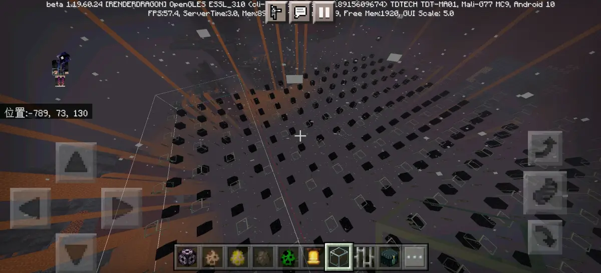
很明显，这个里面的限制类方块是并没有跟它的碰撞箱重合的，但是都是在4×4的范围内，所以违反了空间检测机制，因此什么都没有生成
所以的话基本上就可以得出结论了，改版之后的岩浆怪和史莱姆的生成机制当中，空间检测范围大小是往西北边2格东南边1格的4×3×4的范围大小，并且碰撞箱检测的大小是三种大小的岩浆怪和史莱姆都共用同一套大小，也就是大型的岩浆怪和史莱姆的大小2.08×2.08×2.08
除此之外，其他并没有进行什么更改，也就是说，传统的使用半砖这种比较宽的方块或者是冰之类的部分阻挡生成方块作为生成架的史莱姆农场，依然可以正常使用，行吧，那就这样，问题不大。